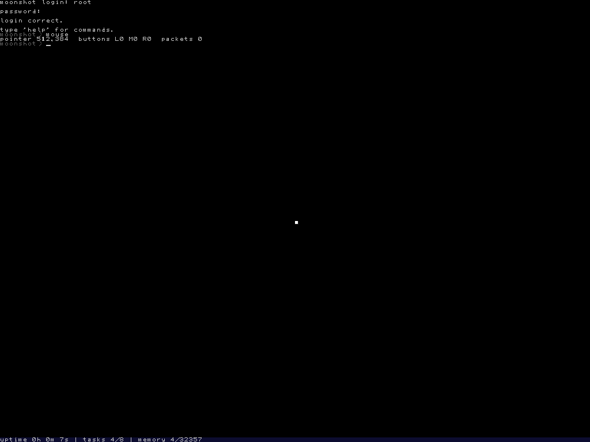

klick
klick is moonshot's mouse driver. it brings up the ps/2 mouse, decodes the packets it sends, draws the pointer on the framebuffer and tells whoever is listening what the mouse did.

mouse command, in a debug build, reporting position, buttons and packet count.one controller, two devices
the mouse hangs off the same 8042 controller as the keyboard, and every byte to and from it goes through the keyboard's own data port. a bit in the status register says which device a byte came from, and klick checks it every time, so mouse bytes never turn into keystrokes and keystrokes are never lost. the mouse interrupts on IRQ12, on the slave pic.
packets
a packet is three bytes, a flag byte with the three buttons and the signs of the movement, then the x and y movement. a packet that is out of sync or that overflowed is dropped rather than turned into a jump of the pointer.
the pointer
klick draws the pointer itself and saves the pixels under it, so it can float over anything. anything that paints an area under the pointer lifts it first and puts it back afterwards, so a program repainting its window does not make it vanish.
who listens
a ring-3 program asks for the pointer with SYS_MOUSE_POLL and gets
where it is in its own window and which buttons are down, or -1 when the pointer
is outside. the buttons only reach the focused window, and never the click that
focused it.